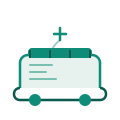

После операции
Восстановление проходит дома — спинку можно поднять, чтобы есть и читать, а высоту подобрать под рост ухаживающего.

Домашняя кровать с регулировкой спинки и высоты — удобно ухаживать, можно comfortably есть и читать. Собирается без инструментов, катается на колёсах с тормозом.
Восстановление проходит дома — спинку можно поднять, чтобы есть и читать, а высоту подобрать под рост ухаживающего.
Удобно менять положение, перестилать и проводить гигиену — не нужно каждый раз наклоняться и тянуться.
Поднимаем спинку — можно сидеть полулёжа, смотреть телевизор или общаться. Тормоз на колёсах фиксирует кровать на месте.
Комфортное положение тела и удобный доступ со всех сторон — важно для круглосуточного ухода дома.
Официальная гарантия производителя. Если что-то не так — позвоните, поможем с сервисом.
Регистрационное удостоверение, декларация соответствия и кассовый чек — всё на руки.
Москва — курьером с заносом в квартиру. В регионы — ТК, 2–5 дней, с подтверждением срока заранее.
Не разобрались со сборкой? Позвоните — расскажем по телефону или пришлём мастера.
Размер спального места 90×200 см, как стандартная односпальная кровать. По габаритам в комнате помещается так же, как обычная — достаточно пространства по бокам для подхода и ухода.
Сборка простая, без специальных инструментов — справится один человек за 20–30 минут. Инструкция понятная, при необходимости поможем по телефону или пришлём мастера.
Да, покрытие гладкое и легко протирается влажной тряпкой с обычным средством. Для дезинфекции подойдут любые бытовые растворы — материал не боится обработки.
Стандартный матрас 90×200 см толщиной 6–10 см. В комплекте матрас идёт опцией — если у вас уже есть подходящий, можно брать кровать без него.
Москва — в день заказа или на следующий день с заносом в квартиру. В регионы — транспортной компанией, 2–5 дней. Срок подтверждаем заранее, перед отправкой.
«Купили для мамы после перелома шейки бедра. Спинку поднимаем — она сама ест и смотрит телевизор. Ухаживать стало намного проще.»
«Собрал сам за полчаса, без помощников. Колёса с тормозом — удобно катать для уборки, потом фиксируем на месте. Крепкая, не шатается.»
«Доставили в Екатеринбург за 4 дня, занесли на 5 этаж. Менеджер заранее перезвонил уточнить адрес и время — приятно, что не пришлось бегать за ними.»
Расскажите вашу ситуацию — мы честно скажем, подходит ли эта кровать или лучше посмотреть другую. Без давления и навязывания.